농산물품질관리사-1차 (2011-05-09 기출문제)
1과목: 관계 법령
1. 다음은 농산물품질관리법의 제정 목적이다. ( )안에 들어갈 내용을 순서대로 옳게 나열한 것은?
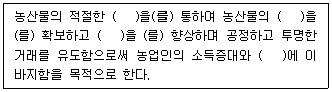
- 품질관리, 안전성, 상품성, 소비자 보호
- 소비자 보호, 상품성, 안전성, 품질관리
- 소비자 보호, 품질관리, 안전성, 상품성
- 품질관리, 소비자 보호, 상품성, 안전성
(정답률: 알수없음)

2. 농산물품질관리법령상 지리적표시 등록 후 그 중요사항이 변경되었을 경우 변경신청을 하여야 한다. 중요사항에 해당되지 않는 것은?
- 등록자
- 자체품질기준 중 재배기준
- 지리적표시품 품질관리계획
- 지리적표시 대상지역의 범위
(정답률: 알수없음)
3. 농산물검사원의 자격을 구분하는 종류에 해당하지 않는 것은?
- 곡류
- 버섯류
- 종자류
- 잠사류
(정답률: 알수없음)
4. 농산물품질관리법령상 유전자변형농산물의 표시기준을 준수한 것은?
- 유전자변형 콩을 판매하면서 “유전자변형 콩 포함”으로 표시하는 행위
- 유전자변형 옥수수가 포함된 옥수수를 판매하면서 “유전자변형 옥수수 포함 가능성 있음”으로 표시하는 행위
- 유전자변형 콩과 유전자변형이 아닌 콩을 혼합하여 판매하면서 “유전자변형 콩 혼합 가능성 있음”으로 표시하는 행위
- 유전자변형농산물 표시가 된 옥수수를 수입하여 소분포장한 후 “유전자변형 옥수수”로 표시하여 판매하는 행위
(정답률: 60%)
5. 농산물품질관리법령상 농산물이력추적관리에 관한 설명으로 옳지 않은 것은?
- 지리적표시의 등록을 받으려면 이력추적관리 등록을 하여야 한다.
- 이력추적관리 등록의 유효기간은 등록을 받은 날부터 3년으로 한다.
- 이력추적관리 농산물의 표시사항에는 산지, 품목(품종), 등급, 생산년도가 포함된다.
- 이력추적관리의 등록사항이 변경된 경우에는 변경사유가 발생한 날부터 1개월 이내에 변경신고를 하여야 한다.
(정답률: 알수없음)
6. A 사는 2011년 9월에 농산물우수관리시설로 지정받기 위해 농산물우수관리시설 지정요건에 부합하는 신규인력을 채용할 예정이다. 다음 중 A 사의 채용요건에 부합하는 자를 모두 고른 것은?
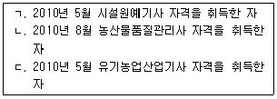
- ㄱ, ㄴ
- ㄱ, ㄷ
- ㄴ, ㄷ
- ㄱ, ㄴ, ㄷ
(정답률: 80%)
7. 농산물품질관리법령상 표준규격품의 사후관리에 관한 설명으로 옳지 않은 것은?
- 농림수산식품부장관은 표준규격품의 품질수준의 유지와 소비자 보호를 위하여 필요시 관계 공무원에게 시료수거를 하게 할 수 있다.
- 농림수산식품부장관은 표준규격품이 해당표시규격에 미달하는 경우에 농림수산식품부령에서 정하는 바에 따라 표시정지처분을 할 수 있다.
- 표준규격품의 사후관리를 위한 조사시 긴급한 경우에는 미리 관계인에게 조사의 일시, 목적, 대상 등을 알릴 필요가 없다.
- 표준규격품의 조사시 관계공무원은 그 권한을 표시하는 증표를 지니고 이를 관계인에게 보여 주어야 한다.
(정답률: 34%)
8. 다음은 농산물의 재검사결과에 대한 이의신청방법을 설명한 것이다. ( )안에 들어갈 내용을 순서대로 옳게 나열한 것은?
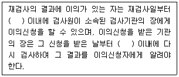
- 3일, 5일
- 3일, 7일
- 5일, 7일
- 7일, 5일
(정답률: 알수없음)
9. 유전자변형농산물의 표시에 관한 설명으로 옳지 않은 것은?
- 농림수산식품부장관은 표시기준 및 표시방법에 관한 세부사항을 정하여 고시할 수 있다.
- 국립농산물품질관리원장은 유전자변형 표시에 대한 정기 수거ㆍ조사계획을 2년마다 세워야 한다.
- 최종구매자가 쉽게 판독할 수 있는 활자체로 표시하여야 한다.
- 농림수산식품부장관은 유전자변형농산물인지를 판정하기 위하여 시료의 검정기관을 지정하여 고시할 수 있다.
(정답률: 알수없음)
10. 농산물품질관리법령상 검사판정의 효력이 상실되는 경우에 해당하는 것은?
- 농림수산식품부령으로 정하는 검사 유효기간이 지난 경우
- 부정한 방법으로 검사를 받은 사실이 확인된 경우
- 검사결과의 표시를 변조한 사실이 확인된 경우
- 검사를 받은 농산물의 내용물을 바꾼 사실이 확인된 경우
(정답률: 알수없음)
11. 농산물품질관리법령상 농산물우수관리인증기관 지정을 신청하는 자가 제출해야 할 서류가 아닌 것은?
- 정관
- 농산물우수관리 인증계획 등을 적은 사업계획서
- 농산물우수관리인증기관의 지정기준을 갖추었음을 증명할 수 있는 서류
- 주사무소의 소재지를 증명할 수 있는 서류
(정답률: 46%)
12. 농산물품질관리법령상 유전자변형농산물 표시대상품목을 고시하는 자는?
- 농림수산식품부장관
- 국립농산물품질관리원장
- 식품의약품안전청장
- 보건복지부장관
(정답률: 알수없음)
13. 농산물품질관리법에서 규정하고 있는 농산물품질관리사의 직무를 모두 고른 것은?
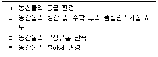
- ㄱ, ㄴ
- ㄴ, ㄷ
- ㄴ, ㄹ
- ㄷ, ㄹ
(정답률: 알수없음)
14. 농산물품질관리법령상 과태료 부과대상자가 아닌 자는?
- 농산물검정결과에 대하여 과대광고를 한 자
- 우수관리인증농산물이 아닌 농산물에 우수관리인증농산물 표시를 한 자
- 이력추적관리농산물 표시방법의 시정명령을 위반한 자
- 유전자변형농산물의 표시방법을 위반한 자
(정답률: 알수없음)
15. 농산물품질관리법령상 농산물품질관리사에 관한 설명으로 옳지 않은 것은?
- 유전자변형농산물 표시조사 업무를 수행한다.
- 농림수산식품부장관은 농산물품질관리사의 자격을 거짓으로 취득한 사람에 대하여 그 자격을 취소하여야 한다.
- 농산물품질관리사 시험과목, 합격기준 등에 필요한 사항은 대통령령으로 정한다.
- 농산물의 품질향상과 유통의 효율화를 촉진하여 생산자와 소비자에게 이익이 될 수 있도록 신의와 성실로써 그 직무를 수행하여야 한다.
(정답률: 알수없음)
16. 농산물품질관리법령상 농림수산식품부장관이 그 권한을 국립농산물품질관리원장에게 위임하지 않은 것은?
- 농산물우수관리기준의 고시
- 농산물우수관리시설의 지정
- 농산물우수관리인증기관의 지정
- 농산물 표준규격의 제정
(정답률: 알수없음)
17. 농수산물유통 및 가격안정에 관한 법령상 '생산자단체'가 될 수 없는 것은?
- 지역농업협동조합
- 품목조합연합회
- 산림조합
- 한국농어촌공사
(정답률: 알수없음)
18. 농수산물유통 및 가격안정에 관한 법령상 시장도매인에 관한 설명으로 옳지 않은 것은?
- 도매시장의 개설자는 시장도매인의 지정기간을 8년으로 할 수 있다.
- 시장도매인은 당해 도매시장의 중도매인에게 농수산물을 판매하지 못한다.
- 시장도매인은 농수산물을 경매 또는 입찰의 방법으로 매매하여야 한다.
- 시장도매인의 임원 중에는 금치산자나 한정치산자가 없어야 한다.
(정답률: 34%)
19. 농수산물유통 및 가격안정에 관한 법률상 산지유통인 등록에 관한 내용이다. ( )안에 들어갈 내용을 순서대로 옳게 나열한 것은?
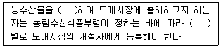
- 구매, 품목
- 가공, 부류
- 생산, 품목
- 수집, 부류
(정답률: 알수없음)
20. 농수산물 유통 및 가격안정에 관한 법률의 제정 목적이다. ( )안에 들어갈 내용을 순서대로 옳게 나열한 것은?
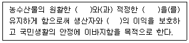
- 판매, 소비, 판매자
- 유통, 가격, 소비자
- 유통, 품질, 소비자
- 생산, 가격, 거래자
(정답률: 55%)
21. 민영도매시장의 개설 및 운영에 관한 설명으로 옳지 않은 것은?
- 민간인 등이 특별시ㆍ광역시ㆍ특별자치도 또는 시지역에 민영도매시장을 개설하고자 할 때에는 시ㆍ도지사의 허가를 받아야 한다.
- 민영도매시장의 개설자는 도매시장법인ㆍ중도매인ㆍ종합유통센터를 두어 운영하여야 한다.
- 민영도매시장의 경매사는 민영도매시장의 개설자가 임면한다.
- 민영도매시장의 시장도매인은 민영도매시장의 개설자가 지정한다.
(정답률: 알수없음)
22. 농수산물유통 및 가격안정에 관한 법령상 농수산물의 생산조정 및 출하조절에 관한 설명으로 옳은 것은?
- 농림수산식품부장관은 농산물의 파종기 이전에 생산자 보호를 위한 상한가격을 예시할 수 있다.
- 농림수산식품부장관이 예시가격을 결정하는 때에는 공정거래위원회와 협의하여야 한다.
- 생산조정 또는 출하조절에도 불구하고 과잉생산의 우려가 있는 경우 생산자 보호를 위해 수확 이전에 생산자로부터 수매할 수 있다.
- 농수산물이 과잉생산되었을 경우 가격안정을 위하여 농어촌진흥기금으로 수매할 수 있다.
(정답률: 알수없음)
23. 농수산물유통 및 가격안정에 관한 법령상 자조금의 사용용도가 아닌 것은?
- 소비촉진을 위한 홍보사업
- 출하조절 등 당해 농수산물의 자율적 수급안정을 위하여 필요한 사업
- 판매촉진을 위한 도매시장 중도매사업
- 당해 자조금조성단체 구성원간의 유통정보화추진을 위한 사업
(정답률: 알수없음)
24. 농수산물유통 및 가격안정에 관한 법령상 출하농수산물의 안전성관리에 관한 설명으로 옳지 않은 것은?
- 도매시장개설자는 해당도매시장에 반입되는 농수산물에 대하여 유해물질의 잔류허용기준 등의 초과여부에 관한 안전성검사를 실시하여야 한다.
- 도매시장개설자는 안전성검사결과 기준미달품 출하자에 대하여 2년 이내의 범위에서 도매시장에 출하하는 것을 제한할 수 있다.
- 농산물가격안정기금으로 농산물 안전성 강화와 관련된 조사 및 연구사업을 지원할 수 있다.
- 시장관리운영위원회에서 도매시장출하품의 안전성 제고에 관하여 심의할 수 있다.
(정답률: 알수없음)
25. 농수산물유통 및 가격안정에 관한 법령상 비축사업 등에 관한 설명으로 옳지 않은 것은?
- 비축사업실시기관은 비축사업을 위한 자금을 당해기관의 회계와 구분하여야 한다.
- 비축용 농수산물은 가격안정을 위해 필요한 경우 도매시장이나 공판장에서 수매할 수 있다.
- 농림수산식품부장관은 비축사업을 농업협동조합중앙회에 위탁할 수 있다.
- 비축용 농수산물은 생산자 보호를 위해 수입할 수 없다.
(정답률: 알수없음)
2과목: 원예작물학
26. 절화보존제의 구성성분으로 옳지 않은 것은?
- 질산은(AgNO3)
- HQS
- AVG
- 에세폰
(정답률: 60%)
27. 위과(僞果)에 관한 설명으로 옳은 것은?
- 종자가 없는 과실을 말한다.
- 대표적인 과실은 딸기와 사과이다.
- 씨방 상위과(上位果)이다.
- 씨방만이 비대ㆍ발달한 과실이다.
(정답률: 60%)
28. 원예작물의 영양적 가치로 볼 수 없는 것은?
- 비타민의 공급원이다.
- 다양한 무기질을 제공한다.
- 항산화작용과 같은 기능성이 있다.
- 질소화합물이 풍부하고 열량이 높다.
(정답률: 73%)
29. 원예작물의 시설재배에서 탄산가스를 시비하는 목적은?
- 병충해 방제
- 광합성촉진
- 연작장해회피
- 수분ㆍ수정촉진
(정답률: 84%)
30. 원예작물을 수경재배할 때 고려해야 할 사항이 아닌 것은?
- 원수의 수질
- 급액의 EC 와 pH
- 배지의 종류
- 급액탱크의 탄산가스 농도
(정답률: 알수없음)
31. 채소종자의 발아에 관한 설명으로 옳지 않은 것은?
- 시금치나 상추의 발아는 온탕침지가 효과적이다.
- 평균발아일수가 짧을수록 우량한 종자이다.
- 종피연화 등 다양한 전처리로 발아를 촉진할 수 있다.
- 발아세는 단기간에 얼마나 균일하게 발아하는가를 나타내는 정도이다.
(정답률: 50%)
32. 조직배양을 통한 무병주 생산이 산업화된 작물은?
- 상추, 딸기
- 감자, 딸기
- 마늘, 무
- 옥수수, 무
(정답률: 알수없음)
33. 채소작물의 결실조절방법에 관한 설명으로 옳은 것은?
- 멜론이나 수박은 시설재배시 인공수분이나 착과제가 필요없다.
- 딸기는 수정벌이 없어도 단위결과한다.
- 토마토나 딸기는 과실솎기를 통해 상품성을 높일 수 있다.
- 오이는 시설재배시 인공수분이 필요하다.
(정답률: 알수없음)
34. 착과나 생육을 촉진하는 식물생장조절물질과 적용대상작물의 연결이 옳지 않은 것은?
- 옥신 - 토마토
- 사이토카이닌 - 수박
- ABA - 고추
- 지베렐린 - 딸기
(정답률: 50%)
35. 채소류 접목재배의 목적으로 옳지 않은 것은?
- 공기전염성 병해의 방제
- 불량환경에 대한 내성 증대
- 흡비력의 증진
- 품질향상 및 내병성 증진
(정답률: 알수없음)
36. 토양의 염류집적을 방지하고 지력을 높이기 위한 방법으로 옳지 않은 것은?
- 유기물을 시용하여 양이온치환용량을 높인다.
- 토양진단에 근거하여 시비를 한다.
- 경운 및 쇄토를 자주 하여 토양을 단립화시킨다.
- 담수처리를 하거나 제염작물을 재배한다.
(정답률: 82%)
37. 낙엽과수의 저온요구도에 관한 설명으로 옳지 않은 것은?
- 휴면타파에 필요하다.
- 저온요구도가 크면 휴면기간이 길다.
- 감나무보다 사과나무의 저온요구도가 크다.
- 일반적으로 0 ℃ 이하에서의 경과시간을 말한다.
(정답률: 알수없음)
38. 과수의 꽃눈분화를 촉진하기 위한 재배적 조치는?
- 질소 시비량을 늘린다.
- 강전정을 실시한다.
- 가지를 수평으로 유인한다.
- 착과량을 늘린다.
(정답률: 60%)
39. 과수의 과실 모양과 온도와의 관계를 설명한 내용이다. ( )안에 들어갈 내용을 순서대로 옳게 나열한 것은?
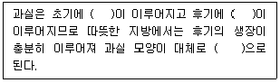
- 종축생장, 횡축생장, 편원형
- 종축생장, 횡축생장, 장원형
- 횡축생장, 종축생장, 편원형
- 횡축생장, 종축생장, 장원형
(정답률: 60%)
40. 과수의 과실숙기촉진을 위한 방법으로 거리가 먼 것은?
- 환상박피실시
- 칼슘시비
- 지베렐린처리
- 가온재배
(정답률: 알수없음)
41. 결핍될 경우 사과의 고두병, 코르크스폿 (cork spot) 을 일으키는 무기원소는?
- 망간
- 칼슘
- 붕소
- 마그네슘
(정답률: 알수없음)
42. 다음 중 과수원에서 페로몬트랩으로 유인하여 방제할 수 있는 해충을 모두 고른 것은?
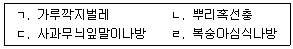
- ㄱ, ㄴ
- ㄷ, ㄹ
- ㄱ, ㄴ, ㄹ
- ㄱ, ㄴ, ㄷ, ㄹ
(정답률: 알수없음)
43. 다음 과실 중 장과류를 모두 고른 것은?
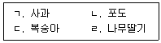
- ㄱ, ㄴ
- ㄱ, ㄷ
- ㄴ, ㄹ
- ㄷ, ㄹ
(정답률: 알수없음)
44. 화훼류를 시설내에서 장기간 재배시 토양에서 일어나는 현상으로 옳지 않은 것은?
- 물리성이 악화되어 인산이나 칼륨 등 무기이온의 식물체내 흡수가 불량해진다.
- 토양내 질산태질소와 유기물 함량이 감소한다.
- 수분 부족시 토양표면의 수분은 증발하고 각종 염류가 집적된다.
- 유용미생물의 수가 감소하여 토양의 각종 물리적, 화학적 작용이 둔화된다.
(정답률: 60%)
45. 주요 절화류와 수확 적기의 연결이 옳지 않은 것은?
- 국화 (대국) - 30 % 개화
- 카네이션 - 60 % 개화 (겨울 수확시)
- 숙근안개초 - 80 ~ 90 % 개화
- 장미 - 봉오리가 착색되고 개화직전
(정답률: 알수없음)
46. 분화용 화훼재배시 개화기의 관수방법으로 옳지 않은 것은?
- 점적 관수
- 저면 매트(mat) 관수
- 스프링클러 관수
- 담배수(bed and flood) 관수
(정답률: 알수없음)
47. 국화 중 추국(秋菊) 의 개화를 촉진하기 위한 방법으로 옳은 것은?
- 암막(단일)처리
- 춘화처리
- 광중단처리
- 전조(장일)처리
(정답률: 알수없음)
48. 일년초 화훼류에 해당되는 것만으로 모두 고른 것은?
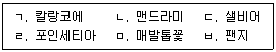
- ㄱ, ㄴ, ㄷ
- ㄱ, ㄹ, ㅁ
- ㄴ, ㄷ, ㅂ
- ㄹ, ㅁ, ㅂ
(정답률: 알수없음)
49. 절화의 수분흡수 저해 원인이 아닌 것은?
- 기포발생에 의한 도관폐쇄
- 미생물증식에 의한 도관폐쇄
- 유액분비에 의한 도관폐쇄
- 유기산에 의한 도관폐쇄
(정답률: 알수없음)
50. 식물이 생장을 시작한 후 또는 줄기의 생장점이 활동을 하고 있을 때 일정기간 저온을 받아 꽃눈이 분화되는 현상은?
- 춘화
- 추대
- 유년상
- 로제트
(정답률: 알수없음)
3과목: 수확 후 품질관리론
51. 원예작물의 수확시기와 관련된 설명으로 옳지 않은 것은?
- 각 품종에 맞는 고유의 색택이 발현될 때 수확한다.
- 고온 및 고광도 하에서 수확은 피하는 것이 좋다.
- 과실의 수확시기와 관련된 인자로는 전분지수 및 호흡량 등이 있다.
- 저장용 과실은 상품성을 향상시키기 위해 늦게 수확한다.
(정답률: 알수없음)
52. 원예작물 수확시 손수확과 비교하여 기계수확의 특성으로 옳지 않은 것은?
- 노동력이 절감되고 작업환경이 개선된다.
- 단위시간당 수확량이 많다.
- 품질이 향상된다.
- 적용가능한 작목이 제한적이다.
(정답률: 70%)
53. 원예산물의 호흡을 억제할 수 있는 방법으로 옳지 않은 것은?
- 상온저장
- MA 저장
- 예냉
- CA 저장
(정답률: 60%)
54. 원예산물의 호흡에 관한 설명으로 옳지 않은 것은?
- 체내의 저장양분과 주변의 산소를 이용하여 호흡을 하면서 이산화탄소를 방출한다.
- 물리적 장해나 생리적 장해를 받았을 때 호흡속도가 저하된다.
- 호흡급등형 과실은 에틸렌을 처리하면 호흡이 증가할 수 있다.
- 과점을 통해 호흡을 하는 과실이 있다.
(정답률: 알수없음)
55. 에틸렌과 관련하여 성숙 및 숙성 제어에 관한 설명으로 옳지 않은 것은?
- 사과저장 전 1- MCP 처리는 노화를 억제할 수 있다.
- 떫은감 연화시 카바이드처리는 에틸렌을 이용한 것이다.
- 에틸렌으로 후숙 가능한 과실로 바나나, 떫은감, 키위 등이 있다.
- 절화에 STS를 이용하면 에틸렌작용을 억제할 수 있다.
(정답률: 알수없음)
56. 과실의 조직감과 관련이 없는 것은?
- 수분함량
- 경도
- 세포벽 구성물질
- 색도
(정답률: 60%)
57. 수확 후 수분손실을 낮추는 직접적인 방법은?
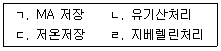
- ㄱ, ㄷ
- ㄱ, ㄹ
- ㄴ, ㄷ
- ㄴ, ㄹ
(정답률: 알수없음)
58. 원예산물별 수확 후 관리과정과 성분변화가 바르게 연결된 것은?
- 포도 - 후숙 - 색소 발현
- 키위 - 연화 - 가용성 펙틴 감소
- 토마토 - 숙성 - 리코핀 증가
- 배 - 후숙 - 아스코르브산 합성
(정답률: 알수없음)
59. 떫은감이 연시가 되어 떫은맛을 느끼지 못하는 이유는?
- 떫은맛 성분인 펙틴이 불용화되기 때문
- 떫은맛 성분인 솔라닌이 에틸렌에 의해 불용화되기 때문
- 수용성 탄닌이 불용성 탄닌으로 전환되기 때문
- 떫은감의 붉은 색소인 안토시아닌이 불용화되기 때문
(정답률: 알수없음)
60. 원예산물의 품질평가내용으로 옳지 않은 것은?
- 비파괴 당도측정시 표준오차는 SEP로 표현할 수 있다.
- 경도의 단위는 N으로 표현할 수 있다.
- 색도의 단위는 Hunter 'L', 'a', 'b'값으로 표현할 수 있다.
- 굴절당도계의 당도표시는 °RB로 표현할 수 있다.
(정답률: 알수없음)
61. 원예산물의 품질평가방법에 관한 설명으로 옳은 것은?
- 굴절당도계로 측정시 당도는 온도에 영향을 받지 않는다.
- MRI나 근적외선은 품질을 평가할 수 없다.
- 비파괴 품질평가 방법에는 X - ray 방법이 있다.
- 산도계는 농약의 잔류량을 측정할 수 있다.
(정답률: 알수없음)
62. 수확 후 관리단계에서 농산물의 등급지정, 비상품과 제거, 그리고 규격화를 목적으로 하는 것은?
- 선별
- 포장
- 수송
- 저장
(정답률: 알수없음)
63. 원예산물 예냉의 장점으로 옳지 않은 것은?
- 품온을 낮춘다.
- 에틸렌 생성을 증가시킨다.
- 저장기간을 증가시킨다.
- 미생물의 증식을 억제한다.
(정답률: 알수없음)
64. 원예산물 세척에 관한 설명으로 옳지 않은 것은?
- 세척의 효과를 높이기 위해 건조를 하지 않고 바로 출하한다.
- 세척시 압상을 줄이기 위해 유속을 조절해야 한다.
- 살균소독을 위한 세척수의 종류에는 염소수, 오존수 등이 있다.
- 미생물뿐만 아니라 농약도 일부 제거한다.
(정답률: 알수없음)
65. 신선편이에 관한 설명이다. ( )안에 들어갈 내용을 순서대로 옳게 나열한 것은?
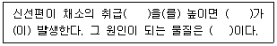
- 습도, 갈변, 아세트알데히드
- 습도, 이취, 유기산
- 온도, 갈변, 유기산
- 온도, 이취, 아세트알데히드
(정답률: 알수없음)
66. 원예산물 저장에 관한 설명으로 옳지 않은 것은?
- 사과는 저온장해를 받지 않으므로 0 ℃ 부근에 저장해도 문제가 없다.
- 배는 과피흑변을 일으키기 때문에 저온저장 전에 예건을 실시한다.
- 1 - MCP 처리된 사과는 상온에서 저장해도 저온저장과 비슷한 저장기간을 갖는다.
- CA 저장은 산소농도를 낮추고 이산화탄소농도를 높여서 저장하는 방법이다.
(정답률: 42%)
67. 저온저장시설에서 냉장에 필요한 장치에 해당되는 것은?
- 팔레트
- 응축기
- 질소발생기
- 훈증기
(정답률: 알수없음)
68. 신선 원예산물의 MA 포장에 관한 설명으로 옳은 것은?
- 호흡량, 필름의 두께 및 재질 등을 고려해야 한다.
- 에틸렌 발생량 및 증산량을 고려하지 않아도 된다.
- 포장내 가스조성은 필름의 가스투과도에 영향을 받지 않는다.
- 산소농도가 높아져서 숙성 및 노화를 촉진한다.
(정답률: 67%)
69. 원예산물의 장해에 관한 설명으로 옳은 것은?
- 복숭아는 0 ℃ 이하의 저온저장에서 정상적으로 숙성이 이루어진다.
- 사과의 과육갈변과 배의 과심갈변은 고농도 이산화탄소에 의해 일어난다.
- 포도는 산소농도 5 ∼ 10 % 상태에서 무기호흡의 알코올발효가 진행된다.
- 바나나는 1∼ 2 ℃에서 저온장해를 받지 않는다.
(정답률: 알수없음)
70. 원예산물의 장해제어방법으로 옳지 않은 것은?
- 깐마늘의 녹변 - 저온저장
- 유통중 물리적 장해 - 포장완충제 이용
- 병충해 발생 - 저장고 훈증
- 감자의 부패 - 큐어링
(정답률: 40%)
71. 저장 및 유통시 원예산물 적재에 관한 설명으로 옳은 것은?
- 저온저장고내의 상자적재시 저장고 용적의 90 % 이상을 적재해야 하며, 이 때 동력비용도 절약된다.
- 렉(선반)과 팔레트를 이용하여 적재하면 입고 및 출고 작업을 원활하게 할 수 있다.
- 낮은 강도의 골판지를 사용하여 원예산물의 압상을 억제한다.
- 상자적재 후 팔레트 전체에 필름밀봉처리를 하면 유해가스의 축적을 방지할 수 있다.
(정답률: 알수없음)
72. 원예산물의 저온유통시스템 적용에 관한 설명으로 옳지 않은 것은?
- 저온장해에 민감한 원예산물은 저온장해온도 이상에서 유통을 해야 한다.
- 저온 컨테이너 이용시 컨테이너 내부의 습도조절이 필요하다.
- 저온 컨테이너 내부는 밀폐된 공간이므로 MA 처리를 해서는 안 된다.
- 저온저장 후 결로 방지를 위해 저온으로 운송한다.
(정답률: 알수없음)
73. 원예산물의 병충해 및 미생물 발생을 억제하는 방법으로 옳지 않은 것은?
- 포도 수확 후 병충해제어를 목적으로 지베렐린을 처리한다.
- 이산화염소 훈증으로 미생물을 제어한다.
- 선별라인에서 압축공기분사는 해충의 밀도를 줄인다.
- 저장고 및 저장상자 소독은 저장시 곰팡이 및 미생물의 증식을 억제한다.
(정답률: 60%)
74. 유전자변형농산물의 안전성을 보장하기 위해 기본적으로 갖추어야 할 항목으로 옳지 않은 것은?
- 알레르기 유발물질이 들어 있지 않을 것
- 자연발생 독성물질이 증가되지 않을 것
- 중요 영양소의 감소가 없을 것
- 가공원료로 허용하지 않을 것
(정답률: 알수없음)
75. 신선농산물의 수확 후 손실경감대책으로 옳지 않은 것은?
- 생산지와 소비지에 적정저장시설 확충
- 수확 후 처리시설 및 저장고 청결 유지
- 수확시 중급 이하의 농산물은 가공용으로도 활용
- 신선농산물은 품목을 혼합하여 저장
(정답률: 알수없음)
4과목: 농산물유통론
76. 농산물의 특성에 관한 설명으로 옳은 것은?
- 표준화 및 등급화가 쉽다.
- 수요와 공급이 탄력적이다.
- 용도가 다양하다.
- 운반 및 보관비용이 적다.
(정답률: 알수없음)
77. 농산물 유통경로에 관한 설명으로 옳지 않은 것은?
- 일반적으로 농산물의 유통경로는 공산품에 비하여 단순하다.
- 농가의 수가 많고 분산될수록 유통경로가 길어지는 경향이 있다.
- 일반적으로 수집, 중계, 분산 단계로 구분된다.
- 최근 유통경로가 다원화되고 있다.
(정답률: 알수없음)
78. 협동조합 유통의 효과에 관한 설명으로 옳지 않은 것은?
- 생산자의 거래교섭력 증대
- 유통비용 증가
- 상인의 초과이윤 억제
- 가격안정화 유도
(정답률: 73%)
79. 농산물 종합유통센터에 관한 설명으로 옳지 않은 것은?
- 유통정보를 수집하여 생산자에게 전달한다.
- 농산물의 소포장 및 유통가공기능을 수행한다.
- 물류체계개선을 통한 물류합리화를 도모한다.
- 가격결정방식은 경매를 원칙으로 한다.
(정답률: 알수없음)
80. 농산물저장에 관한 설명으로 옳지 않은 것은?
- 부패성이 강하여 특수저장시설이 필요하다.
- 투기를 목적으로 저장하는 경우도 있다.
- 유통금융기능을 수행할 수도 있다.
- 소유적 효용을 창출한다.
(정답률: 알수없음)
81. 농산물브랜드의 기능이 아닌 것은?
- 수급조절기능
- 상징기능
- 광고기능
- 품질보증기능
(정답률: 알수없음)
82. 농산물 유통비용과 가격에 관한 설명으로 옳은 것은?
- 유통비용이 증가하면 일반적으로 소비자가격은 하락한다.
- 유통비용 변화분은 소비자가격과 생산자가격의 변화폭을 합한 것이다.
- 유통비용 변화에 따른 가격변화폭은 수요곡선의 이동폭에 따라 결정된다.
- 공급이 수요보다 비탄력적이면 유통비용 증가는 생산자보다 소비자에게 더 큰 부담을 준다.
(정답률: 25%)
83. 최근 식생활의 고급화 및 다양화로 나타난 식품소비행태 변화 추세가 아닌 것은?
- 소포장 선호, 외식 증가
- 쌀소비량 감소, 육류 및 수산물 소비량 증가
- 유기가공식품 수요 및 수입물량 증가
- 신선식품구매 증가, 가공식품구매 감소
(정답률: 알수없음)
84. 농산물 직거래에 관한 설명으로 옳지 않은 것은?
- 생산자, 유통업자, 소비자의 기능을 수평적으로 통합한다.
- 산지 또는 소비지의 농민시장이 해당된다.
- 유통단계를 줄이는데 기여한다.
- 친환경농산물은 생산자와 소비자간에 직거래되는 예가 많다.
(정답률: 알수없음)
85. 농산물 유통정보의 요건으로 옳지 않은 것은?
- 정보는 원하는 사람에게 적절한 시기에 전달되어야 한다.
- 정보이용자가 쉽게 정보에 접근하고 취득할 수 있어야 한다.
- 정보수집자의 주관이 반영되어 정보의 가치를 높여야 한다.
- 정보이용자의 의사결정에 필요한 모든 정보가 포함되어야 한다.
(정답률: 알수없음)
86. 표적시장선택을 위한 전략의 사례로 적절하지 않은 것은?
- 가내수공업으로 두부를 소량생산하는 A 업체는 틈새 마케팅이 적절하다.
- 한 종류의 햄을 대량생산하는 B 업체는 비차별적 마케팅이 필요하다.
- 서로 다른 한국과 미국 시장에 각각 진출하려고 하는 C 업체는 차별적 마케팅이 적절하다.
- 개별고객의 욕구와 선호에 부응하는 상품을 생산하는 D 업체는 집중적 마케팅이 효과적이다.
(정답률: 알수없음)
87. 다음에 제시된 사례에 해당하는 제품수명주기단계(A ~ D)는?
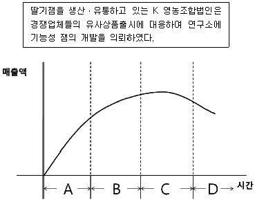
- A
- B
- C
- D
(정답률: 37%)
88. 마케팅믹스 중 가격관리에 관한 설명으로 옳지 않은 것은?
- 업체들은 혁신 소비자층에 대해 초기저가전략을 사용한다.
- 업체간 경쟁이 치열할수록 개별업체는 가격을 독자적으로 결정하기 어렵다.
- 일반적으로 소비자는 농산물의 품질이 가격과 직접적인 관련이 있다고 본다.
- 가격관리는 마케팅믹스 중 수익을 창출하는 유일한 요소이다.
(정답률: 알수없음)
89. 농산물 유통활동에 관한 일반적인 개념으로 옳은 것을 모두 고른 것은?
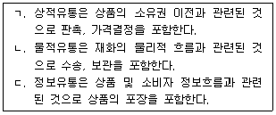
- ㄱ, ㄴ
- ㄱ, ㄷ
- ㄴ, ㄷ
- ㄱ, ㄴ, ㄷ
(정답률: 64%)
90. 농산물 유통금융에 관한 설명으로 옳은 것을 모두 고른 것은?
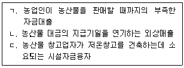
- ㄱ, ㄴ
- ㄱ, ㄷ
- ㄴ, ㄷ
- ㄱ, ㄴ, ㄷ
(정답률: 알수없음)
91. 농산물 산지유통의 기능에 관한 설명으로 옳지 않은 것은?
- 생산자와 산지유통인 사이의 농산물 1차 교환기능
- 농산물의 가격변동에 대응한 공급량 조절기능
- 생산자와 소매상에 대한 재고유지기능
- 산지가공공장을 이용한 형태효용 창출기능
(정답률: 47%)
92. 다음 중 할인점에 해당되는 것은?
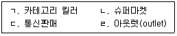
- ㄱ, ㄴ
- ㄱ, ㄹ
- ㄴ, ㄷ
- ㄴ, ㄹ
(정답률: 50%)
93. 다음은 마케팅전략 수립을 위한 상황분석이다. ( )안의 용어로 옳은 것은?
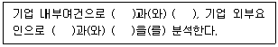
- 기회 - 강점 - 약점 – 위협
- 강점 - 기회 - 위협 – 약점
- 강점 - 약점 - 기회 – 위협
- 기회 - 위협 - 강점 - 약점
(정답률: 알수없음)
94. 소매상이 생산자나 도매상을 위해 수행하는 기능으로 옳지 않은 것은?
- 판매대리인 기능
- 구색갖추기 기능
- 보관 및 위험부담 기능
- 시장정보제공 기능
(정답률: 50%)
95. 우리나라 농산물 도매시장에 관한 설명으로 옳은 것은?
- 산지의 표준규격 농산물의 출하량 증가로 도매시장 거래물량이 크게 증가하고 있다.
- 도매시장에서 징수되는 상장수수료는 대량출하자에게 유리하다.
- 거래총수 최대화의 원리에 의해 대량거래되므로 거래의 신속성과 효율성을 제고한다.
- 대량준비의 원리에 의해 사회적 유통비용이 절감된다.
(정답률: 28%)
96. 농산물의 시장유통과 시장외 유통에 관한 설명으로 옳은 것은?
- 시장유통경로에서는 계약재배가 포함된다.
- 시장외 유통은 도매시장을 거치지 않는 유통경로이다.
- 시장외 유통은 불법적인 유통이므로 단속대상이 된다.
- 우리나라의 경우 시장유통경로 비중이 지속적으로 증가하고 있다.
(정답률: 알수없음)
97. 농산물 공동계산제의 장점에 관한 설명으로 옳지 않은 것은?
- 농산물브랜드 구축에 유리하다.
- 농산물의 품질 저하나 감모(loss)를 줄일 수 있다.
- 갑작스런 시장변화에 즉각적으로 대응할 수 있다.
- 생산자가 유통업체나 가공업체에 종속되는 상황에 대처할 수 있다.
(정답률: 알수없음)
98. 농산물 소매시장에 관한 설명으로 옳지 않은 것은?
- 중개기능을 담당하고 있다.
- 최근 다양한 업태가 나타나고 있다.
- 최종소비자를 대상으로 거래가 진행된다.
- 카탈로그 판매, TV 홈쇼핑 판매 등도 포함된다.
(정답률: 알수없음)
99. 농산물 전자상거래의 기대효과로 옳지 않은 것은?
- 유통의 시간적 또는 공간적 제약을 줄일 수 있다.
- 생산자의 수취가격 제고와 소비자의 지불가격 절감에 기여한다.
- 농산물의 훼손가능성을 줄여서 상품가치를 유지하는 데 유리하다.
- 소비자와의 대면판매가 이루어지지 않아 소비자의 구매정보를 알기 어렵다.
(정답률: 46%)
100. 농산물의 산지출하에 관한 설명으로 옳지 않은 것은?
- 정전판매를 위해 파종기에 산지유통인과 계약을 체결한다.
- 농업협동조합에 농산물판매를 의뢰한다.
- 생산자조직을 결성하여 농산물을 공동출하한다.
- 수확한 농산물의 처리를 농산물산지유통센터 (APC)에 일임한다.
(정답률: 알수없음)